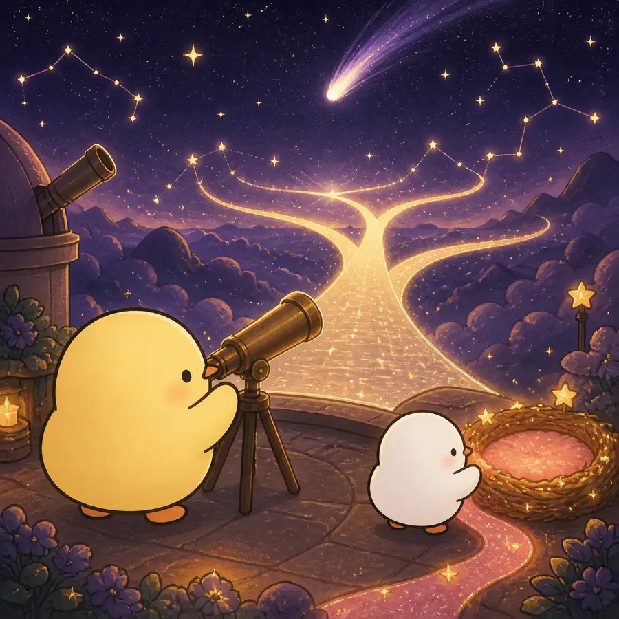
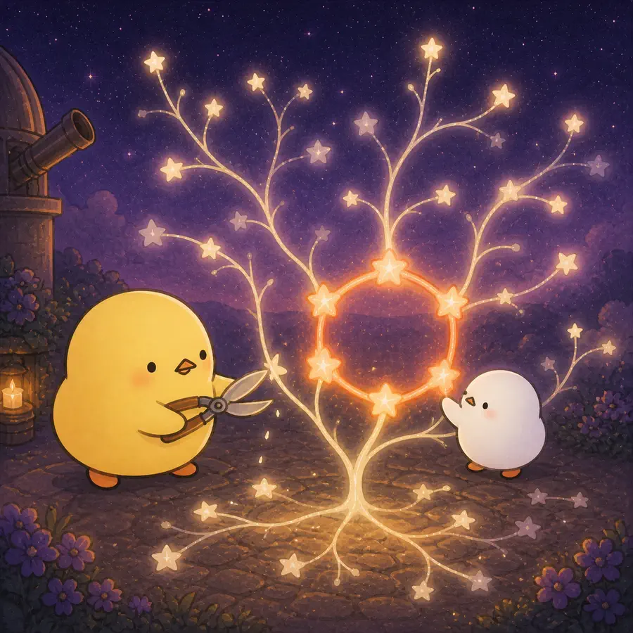

ILLUSTRATED OVERVIEW
4컷으로 읽는 사회정서선택이론
나이가 아니라 앞으로 남았다고 느끼는 시간이 사회적 목표와 관계 선택의 우선순위를 어떻게 바꾸는지 봅니다.
옆으로 넘겨 4컷 보기
-

미래가 넓게 느껴지면 지식 습득과 장기적 준비 목표가 상대적으로 우선한다.
-
시간의 끝을 가깝게 또는 멀게 상상하면 전형적인 연령 선호가 달라졌다.
-

연결망 축소는 주변 관계의 선택적 감소와 가까운 관계의 유지로 나타날 수 있다.
-
정서적 초점의 증가는 절대 기억량 증가나 모든 부정 정서의 소멸과 다르다.